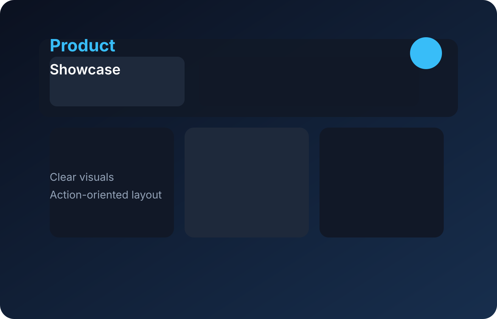

Featured Project
Farmer Price Predictor
A data-driven tool that helps smallholder farmers predict crop price fluctuations and decide the best time to sell. Uses 3 years of East African market data (mirroring Kaggle WFP/FAO datasets) with linear regression and seasonal decomposition to generate plain-language forecasts.
JavaScript · Chart.js · Time-Series Analysis · Agriculture
Try the Tool →